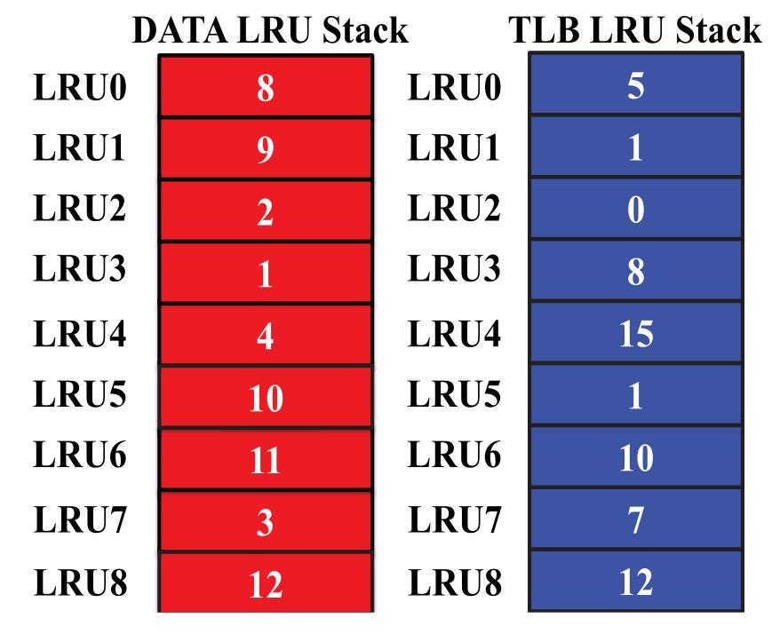
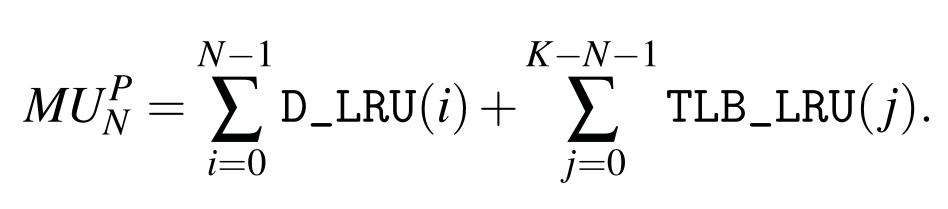
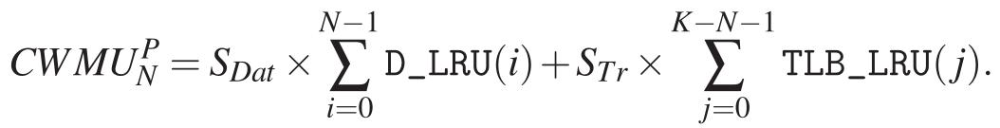
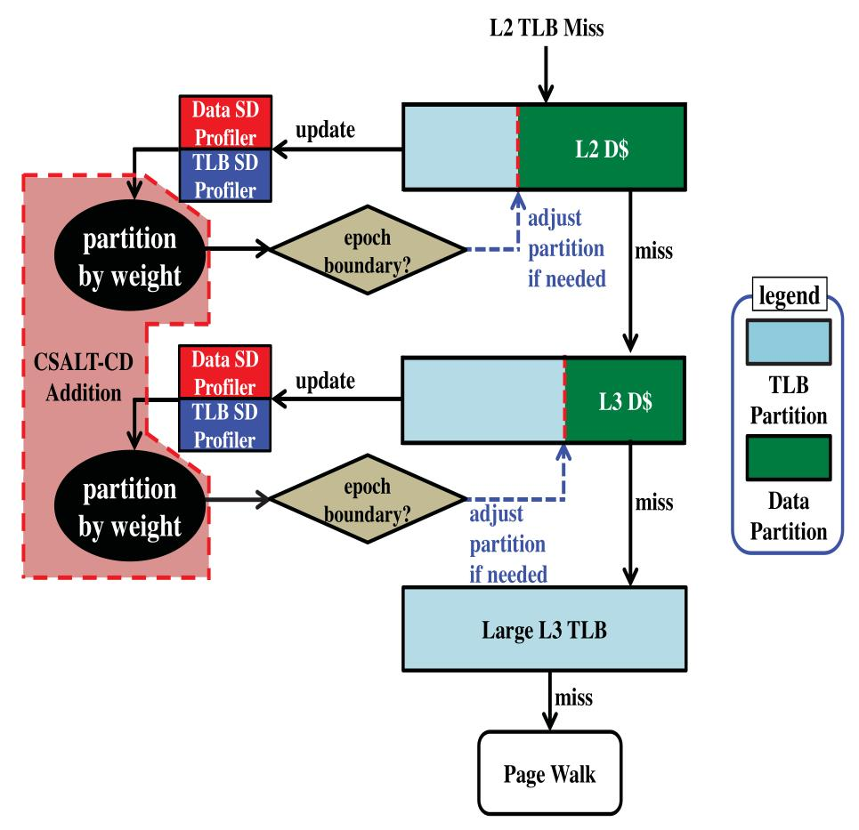
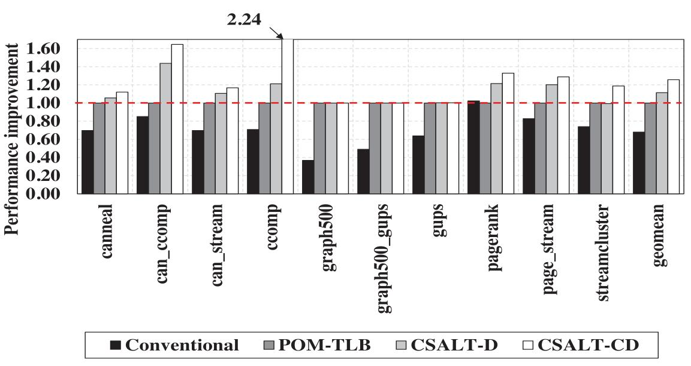

CSALT: Context Switch Aware Large TLB
Yashwant Marathe¹ Nagendra Gulur² Jee Ho Ryoo¹ Shuang Song¹ Lizy K. John¹
¹University of Texas at Austin
²Texas Instruments
Context Switching in Virtualized systems
TLB misses are costly due to 2D page walk
Causes increase in TLB misses
Also causes Data cache contention
ASIDs are not effective for applications with large memory footprint
Over 6x increase in TLB MPKI for 2 VM contexts
Cache effects of Address translation
Regions of Page tables are cached
Can cause Data cache contention
In POM TLB, parts of TLB are cached
In their experiments, on an average 60% of L2 and L3 cache has TLB entries
Cache occupancy of TLB entries are more for Applications with high TLB misses
Data and Page table cache lines
Replacement policy does not differentiate
Impacts system performance differently
Data misses can be overlapped
TLB misses are blocking
Context switches will affect both cache lines
POM TLB
Virtualized systems need Large TLB capacity
So Use a Part Of Memory as TLB => POM TLB
POM TLB is addressible
So can be cached
CSALT: Context Switch Aware Large TLB
TLB-aware Cache Way paritioning scheme
Works on Top of POM TLB
Tries to minimize interference between Data and TLB cache lines
Propose 2 cache partitioning algorithms: CSALT-D and CSALT-CD
Dynamic Way partitioning
Partition ways for Data and TLB
Modifies allocation every Epoch
Need Heuristics to select configurations
Differentiate Data and TLB
Using 1 bit cache metadata
Using Address range of POM TLB
Cache access checks all ways but evict from allocated range
CSALT-D
Maintain LRU stack counters
Based on Mattson's Stack Distance Algorithm
On every hit, corresponding LRU counter is incremented
Maintains two set of counters (Data and TLB)
LRU Stack

Marginal Utility
Uses Marginal Utility as the heuristic
Calculated for all combinations
Combination that has high MU is chosen

CSALT-CD
Criticality weighted Dynamic partitioning
Data misses and TLB line misses have different criticality
Based on application
Use performance counters to measure performance gains
Criticality Weighted Marginal Utility
Marginal Utility that takes criticality into account
Scaled by criticality weights
Criticality weight is the ratio of cycles for miss to hit

Overall Design

Evaluations
Trace based simulation using PIN tool
Simulation with Modified Ramulator
Uses Qemu with KVM
Uses Benchmarks from PARSEC, Graph500, connected components
Run two copies of multi threaded benchmark
Compared with POM TLB
Performance improvements

Other Results
Perf. of CSALT-CD is better than CSALT-D
In Native, gives a 1.05 speedup
Compared with TSB and DIP, performs better
TSB requires Multiple Accesses
Both don't differentiate cache lines
Perf. improvment is better when more contexts are running
Epoch of 256K accesses works best for most workloads
Conclusion
There are advantages to differentiate data and page table cache lines
TLB misses are rare and so we can limit Page table cache lines to L1
Better context switch performance seems to be a side effect